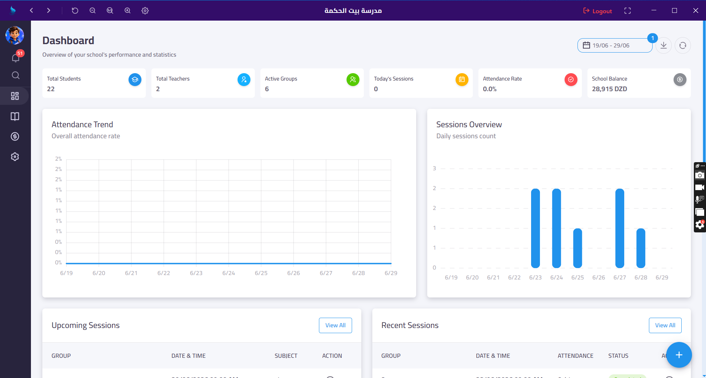
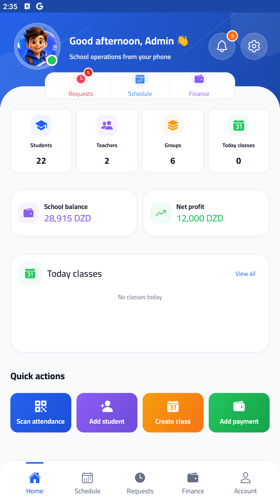
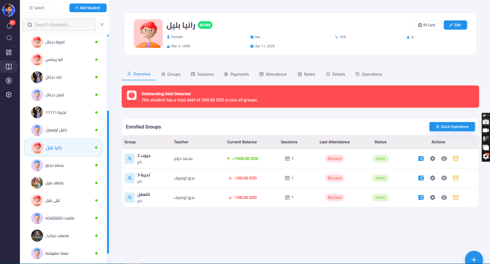
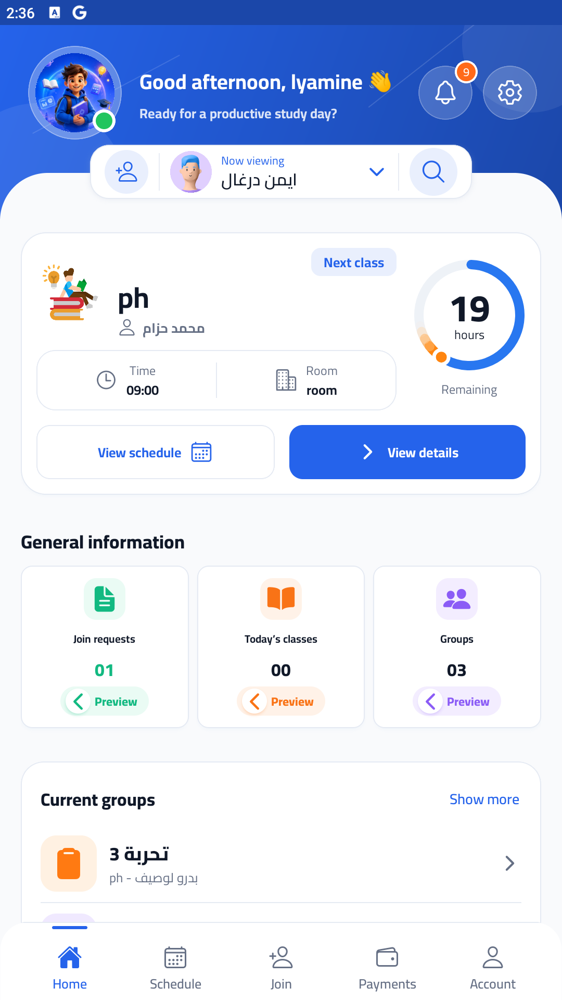
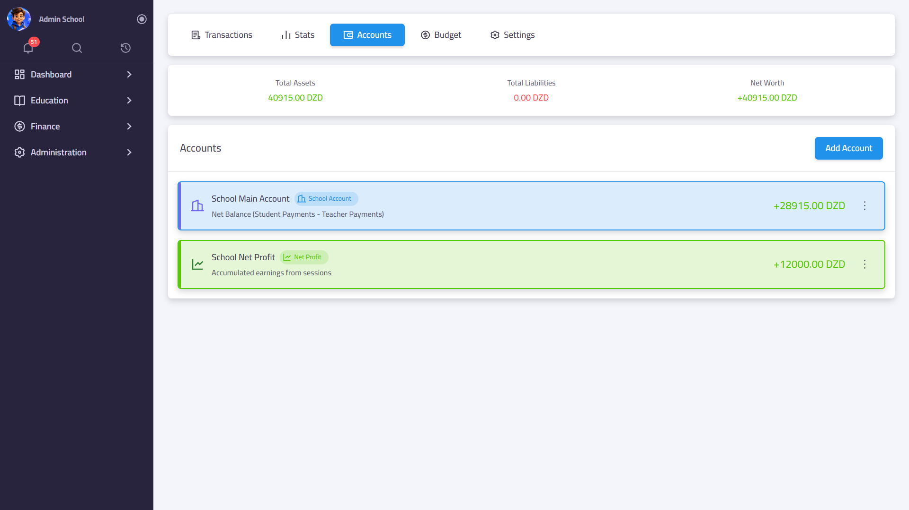
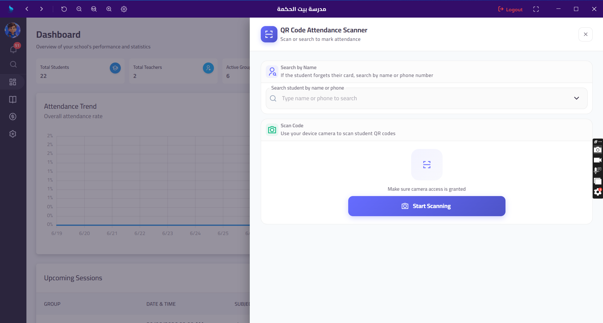
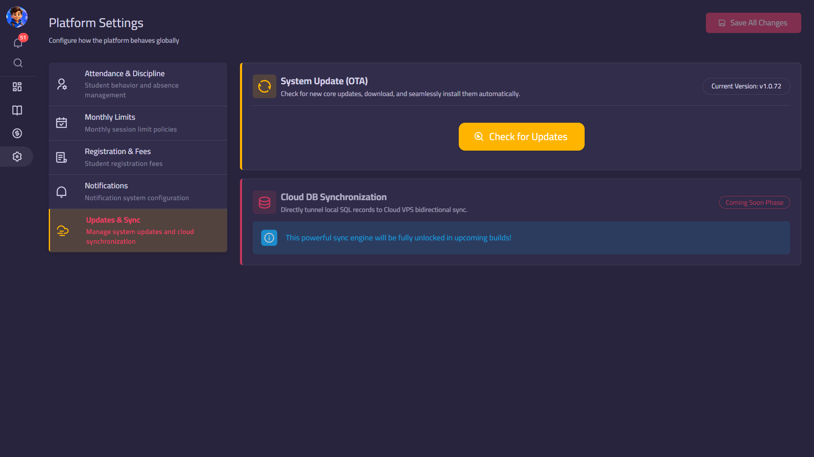
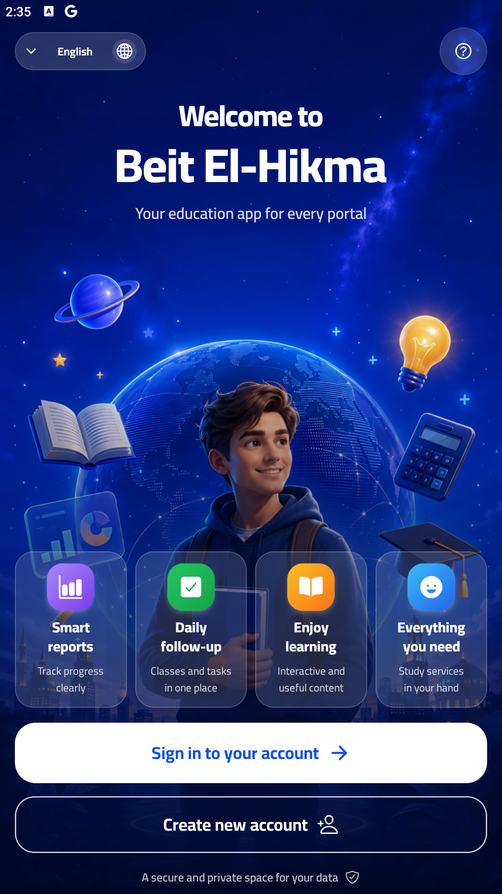

ERP-scale education platform · Sole developer build
Beit El-Hikma turns school operations into one connected command center.
A full-stack school management ecosystem covering administration, teachers, parents, students, attendance, payments, notifications, QR scanning, desktop deployment, LAN access, and mobile portals.
AD
Built from scratch by Ahmed Amir Derghal
Product architecture · full-stack engineering · deployment packaging · UI systems
Admin Dashboard · School ERP


6active groups
22students
QRattendance
Project overview
Not a simple school app — a multi-surface education ERP.
This case study presents Beit El-Hikma as a product-grade platform with a serious business domain: roles, permissions, financial logic, attendance rules, registration flows, mobile portals, and local/cloud deployment strategy.
01
The challenge
Schools need one operational source of truth for students, groups, teachers, sessions, payments, attendance, and parent communication. Most small institutions rely on fragmented sheets, messaging apps, and manual payment tracking.
02
The solution
A unified ERP platform with web administration, mobile portals, QR attendance, approvals, finance tracking, smart notifications, teacher earnings, and desktop-first deployment for local client environments.
03
The outcome
A complete deployable product foundation that demonstrates system design, full-stack execution, UX thinking, local infrastructure packaging, and real business workflow automation.
Product positioning
A complete operating system for school administration.
The platform is designed around the real lifecycle of a school: onboarding, approvals, enrollment, sessions, attendance, billing, debt alerts, teacher payouts, parent visibility, and operational reporting.
Admin Web
Mobile Portals
Desktop Runtime
QR Scanner Bridge
LAN Client
RBACResource / action / scope permissions
FinancePayments, balances, profit, cashbox
AttendanceQR scan, blocked absence, makeup flows
PortalsAdmin, teacher, parent, student journeys
System architecture
Built as an ecosystem, not a single screen.
The strength of the project is the number of connected layers: API core, web dashboard, mobile apps, local desktop runtime, LAN client discovery, and scanner integration.
Experience layer
Next.js admin dashboard
Expo mobile app
Parent / student / teacher portals
API & domain core
Flask API
JWT authentication
RBAC permissions
Attendance + finance engines
Runtime & devices
Electron desktop host
PostgreSQL + Redis
LAN discovery client
C# QR scanner bridge
Feature depth
Every module supports a real operational workflow.

Admin dashboard with complete school control
Manage students, teachers, groups, sessions, payments, attendance, notes, approvals, operations, and permissions from one web interface.
- Student profiles with group enrollment and debt alerts
- Groups, teachers, sessions, and academic settings
- Team members, roles, permissions, and audit-ready structure

Role-based mobile portals
The mobile app gives parents, students, teachers, and admins the correct experience for their role, including approvals, schedules, finance, and notifications.
- Parent child selector and payment history
- Student group join flow and schedule preview
- Admin quick actions from phone

Finance logic connected to real school workflows
Payments, balances, teacher payouts, school balance, profit tracking, and cashbox style accounting are built into the operational layer.
- Student payments and current balances
- Teacher payments and school net profit
- Financial accounts and export-ready payment records

QR attendance plus discipline rules
The attendance system connects scan events, absence status, blocked absence rules, make-up attendance, and notifications into one workflow.
- QR scanning from web and mobile workflows
- Blocked absence system with configurable rules
- Attendance notifications and parent visibility

Local-first desktop deployment strategy
Electron packaging runs the platform locally for clients, while LAN discovery and future cloud sync make the system practical for real school environments.
- Desktop runtime for local school deployment
- Gateway layer for unified access
- Scanner bridge for USB/COM QR devices
Mobile experience
Designed for quick actions, parent trust, and daily follow-up.
Mobile screens are not secondary. They carry the real daily experience: logging in, selecting children, checking schedules, reviewing payments, receiving alerts, and joining groups.
✓ Parent account
✓ Student registration
✓ Payment history
✓ Notifications

Technical ownership
One project proving product thinking and engineering range.
Product gallery
Selected screens from the web, mobile, and portal ecosystem.
Use these visuals as the foundation for the Featured portfolio page and later for the Case Study PDF.
Project Ownership
SchoolV1 / Beit El-Hikma was designed and built by Ahmed Amir Derghal.
This private case study presents a real software product built as a multi-platform school management system covering administration, attendance, finance, portals, mobile workflows, desktop deployment, and local network operations.
© 2026 Ahmed Amir Derghal
All rights reserved. Project details, screenshots, workflows, and product architecture are shared for portfolio and professional review purposes only.